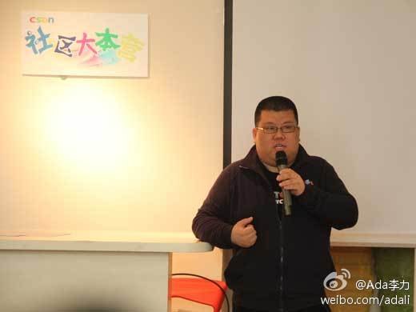

北京时间3月22日，由CSDN社区运营部门发起的社区领导人沙龙活动第一期在3W咖啡顺利举办。本次活动聚集了国内不少优秀社区的创始人及负责人，沙龙上大家一起探讨了社区运营的一些内在的规律和方法。 网页链接 
回复@苏震巍:多谢鼓励。 //@苏震巍:CSDN现在生态很不错哦@Ada李力:3月22日一天的社区领导人聚会，交流碰撞有很多感想，之后一口气写了三篇相关的博文网页链接 。线下活动确实应该把交流互动作为重点来策划和设计。另外，参会者写的业余报道往往比专业记者采写得更有意思些。
回复@齐宝玮:活动会有的。[呵呵] //@齐宝玮:这次恰好出差没能参加，很遗憾啊，还记得上次在国家会议中心csdn举办的移动互联网大会嘉宾室，咱们几个还是聊了很多东西的，以后多组织一些这样的活动，哈哈~@Ada李力:北京时间3月22日，由CSDN社区运营部门发起的社区领导人沙龙活动第一期在3W咖啡顺利举办。本次活动聚集了国内不少优秀社区的创始人及负责人，沙龙上大家一起探讨了社区运营的一些内在的规律和方法。 网页链接
这句评论有意思：“许久不在江湖，可江湖里面还有她的传说啊。” [呵呵]//@陈沙克：回复@Adela可爱多:网页链接。或者去cu里搜索 红袖，应该就可以知道这个故事的来龙去脉。@陈沙克:你把ChinaUnix的最大秘密都说出来。社区玩的是暧昧？ - 李力的专栏 - 博客频道 - CSDN.NET 网页链接
你不能讨好每一个人，用在社区里也一样。//@刘皓_捺捺: “胡乱灌水的就当他不存在、满腹牢骚的就当他不存在、倚老卖老的就让他不存在”——这三句话还蛮有道理的，过去我们对流失任何一个用户都觉得可惜，但是却很少考量他是不是持续给这个社区带来正能量。@Ada李力:3月22日一天的社区领导人聚会，交流碰撞有很多感想，之后一口气写了三篇相关的博文网页链接 。线下活动确实应该把交流互动作为重点来策划和设计。另外，参会者写的业余报道往往比专业记者采写得更有意思些。
回复@Richard宫文学:厦门是个好地方。 //@Richard宫文学:@淘宝正明 @程开源 @Ada李力 @MobilityThoughts 请帮转！多谢！@宫文学Richard:最近正在厦门建一个技术团队，移动+互联网领域，请朋友们帮忙推荐厦门的软件工程师，以及愿意在美丽宜居的厦门工作的人！

 网页链接
网页链接